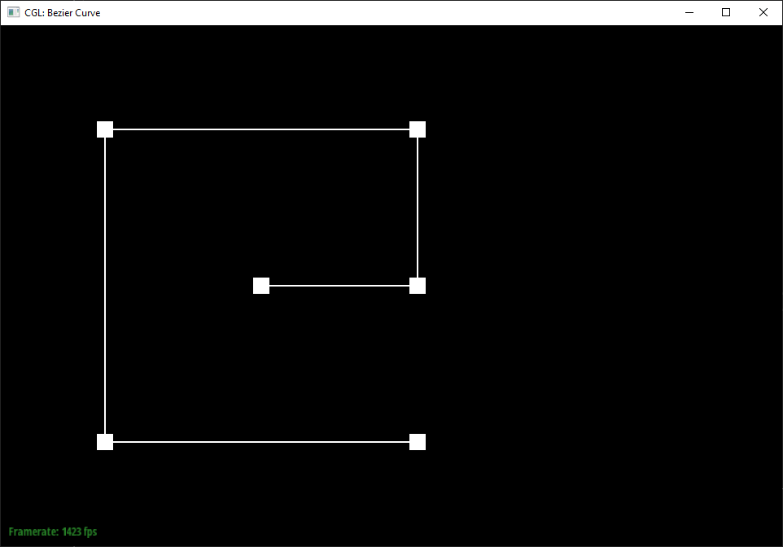
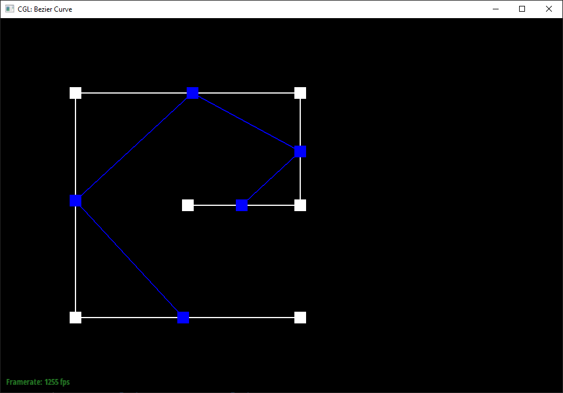
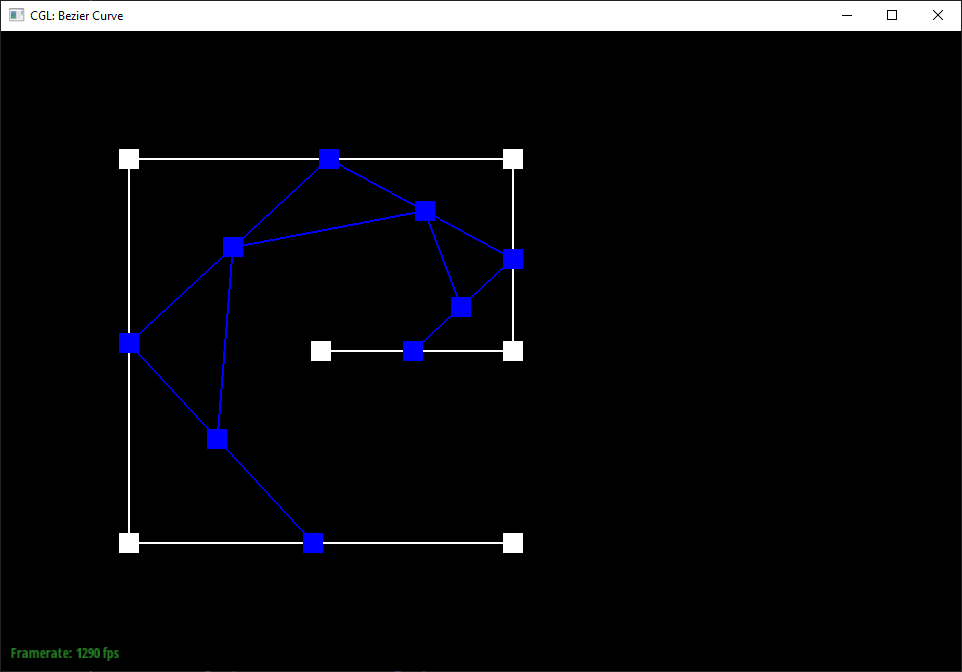
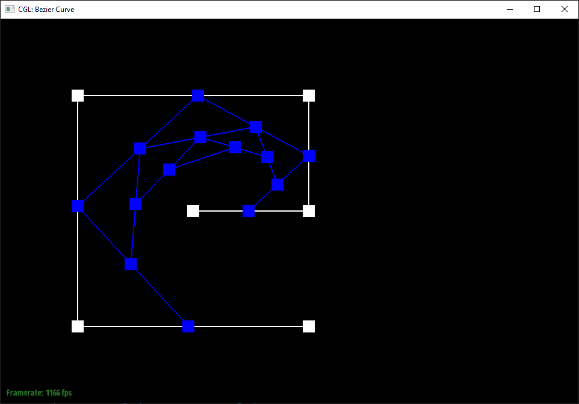
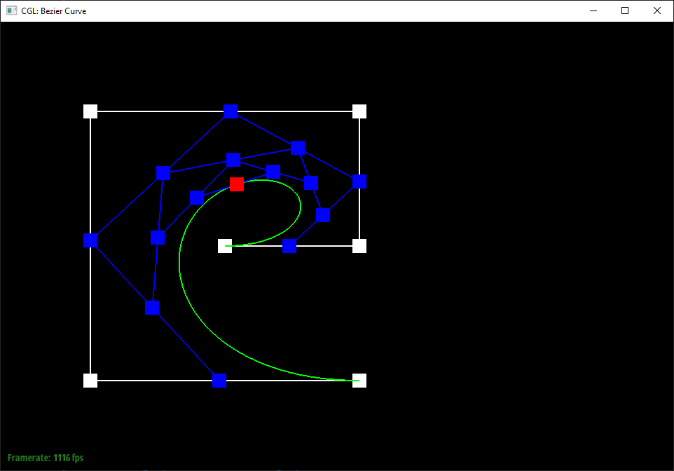
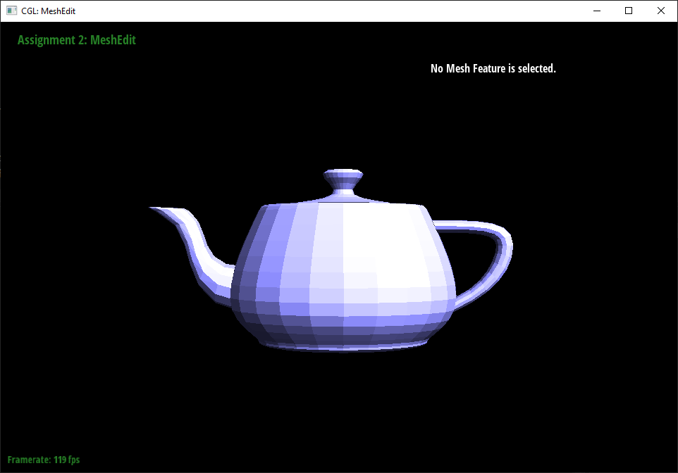

Overview
First, I implemented Bezier Curves and Surfaces by interpolating through a grid of control points using Casteljau Subdivision. Then, I implemented mesh editing functions to flip and split edges, and combined them to implement loop subdivision. Bezier curves/surfaces and meshes offer alternative ways to represent a shape. Bezier curves are smoother, but are much less computationally efficient. The teapot scene loaded much faster with the mesh representation than the Bezier surface one. This may be because checking a Bezier surface for intersection is difficult.
Section I: Bezier Curves and Surfaces
Part 1: Bezier Curves with 1D de Casteljau Subdivision
Briefly explain de Casteljau's algorithm and how you implemented it in order to evaluate Bezier curves.De Casteljau's algorithm interpolates between control points. For every consecutive pair of points, a new point is created by linearly interpolating between them with some interpolation factor t. The number of new points is one less than the original number of points. This process is repeated with the new points until only a single point remains, which is the resulting point. It is a more stable method of evaluating the polynomial which represents the Bezier curve than the direct method. I first implemented a single step of the algorithm, which returned a new set of a points by interpolating between consecutive pairs of original points with the class member t as the interpolation factor. I then ran this algorithm repeatedly until only a single point was left.
Take a look at the provided .bzc files and create your own Bezier curve with 6 control points of your choosing. Use this Bezier curve for your screenshots below.
Chosen points: 0.5 0.5 0.8 0.5 0.8 0.8 0.2 0.8 0.2 0.2 0.8 0.2
Show screenshots of each step / level of the evaluation from the original control points down to the final evaluated point. Press E to step through. Toggle C to show the completed Bezier curve as well.
|

|

|
|

|

|
|

|

|
Show a screenshot of a slightly different Bezier curve by moving the original control points around and modifying the parameter \(t\) via mouse scrolling.
I dragged the control points around a bit and increased \(t\).
Part 2: Bezier Surfaces with Separable 1D de Casteljau
Briefly explain how de Casteljau algorithm extends to Bezier surfaces and how you implemented it in order to evaluate Bezier surfaces.The de Casteljau algorithm can be extended to Bezier surfaces by interpolating between multiple Bezier curves. In particular, each Bezier curve is interpolated using some interpolation factor $u$, which generates a single point for each curve. Then, these points are again interpolated as a Bezier curve using another interpolation factor $v$. When $u$ and $v$ are swept over a range of values, it is equivalent to generating a surface by interpolating between many Bezier curves. I implemented this by treating each "row" of the grid as a Bezier curve, and running the single-step algorithm as before, except with Vector3D instead of Vector2D, and with the interpolation factor given by the parameter $u$. This was repeated until a single point remained for each Bezier curve. I then treated these new points as another Bezier curve and interpolated between them with the interpolation factor given by the parameter $v$.
Show a screenshot of bez/teapot.bez (not .dae) evaluated by your implementation.
Section II: Triangle Meshes and Half-Edge Data Structure
Part 3: Area-Weighted Vertex Normals
Briefly explain how you implemented the area-weighted vertex normals.I iterated through the half-edges rooted at the vertex by starting with ```h = vertex->halfedge()``` and proceeding to ```h->twin()->next()``` at each iteration. For each half-edge $h_i$, I calculated its direction vector as ```v_i = h_i->twin()->vertex()->position - h_i->vertex()->position```. Then I calculated the area-weighted normal of the corresponding triangle using the cross product, ```cross(v_[i+1], v_i)```. In particular, this is equal to the triangle normal multiplied by twice its area. The factor of 2 is constant between all triangles so it will be canceled out when normalized at the end. Finally, we normalize the sum of these area-weighted normals to obtain the final vertex normal.
Show screenshots of dae/teapot.dae (not .bez) comparing teapot shading with and without vertex normals. Use Q to toggle default flat shading and Phong shading.
|

|
|
Part 4: Edge Flip
Briefly explain how you implemented the edge flip operation and describe any interesting implementation / debugging tricks you have used.As recommended, I drew a pair of triangles before and after the edge flip operation. For every element (edge, face, half-edge), I marked which element each reference pointed to after the change. For the first version of the code, I simply made copies of iterators to each element at the very beginning so that none of them would be overwritten or invalidated by setting references in between. For example, if ```halfedge()->next()``` gets assigned to something else, then ```halfedge()->next()->twin()``` would also change. After that, I cleaned up the code a bit by removing some assignments that weren't necessary, as well as using the direct form (i.e. ```halfedge()->next()->twin()```) instead of making a copy of the iterator for references that never change.
Show screenshots of the teapot before and after some edge flips.
Write about your eventful debugging journey, if you have experienced one.
I made some pretty pictures which I posted on Ed. Otherwise the debugging was fairly painless. One bug I encountered was the behavior of std::list::end() being different than I expected (it actually moves with the end of the list if the list expands, rather than pointing to the n+1th element). Additionally, there a few typos that I immediately realized when seeing the incorrect behavior in the renderer.
Part 5: Edge Split
Briefly explain how you implemented the edge split operation and describe any interesting implementation / debugging tricks you have used.I created 6 new half-edges, 3 new edges, 2 new faces, and 1 new vertex using the corresponding newEdge, newFace, etc. functions. I did the same process as for edge flip. I took advantage of symmetry by organizing these elements into symmetric pairs that I set using a for loop to reduce the amount of code.
Show screenshots of a mesh before and after some edge splits.
Show screenshots of a mesh before and after a combination of both edge splits and edge flips.
Write about your eventful debugging journey, if you have experienced one.
Edge splits were actually easier to debug than the edge flip. They worked on nearly the first try, with just a few typos needing to be fixed.
If you have implemented support for boundary edges, show screenshots of your implementation properly handling split operations on boundary edges.
N/A
Part 6: Loop Subdivision for Mesh Upsampling
Briefly explain how you implemented the loop subdivision and describe any interesting implementation / debugging tricks you have used.Following the recommended process, I first calculated the new positions every vertex by implementing the formula given in the spec: ```(1 - n * u)* v->position + u * v->centroid```, where $n$ is the degree, $u$ is 0.1875 if $n = 3$ or $\frac{3}{8n}$ otherwise. The centroid is the mean position of adjacent vertices, computed by implementing ```Vertex::calculateCentroid()```. I simply iterated across all the half-edges rooted at the vertex using the same loop used to calculate vertex degree, and added together ```h->twin()->vertex()->position``` for each one. I then calculated the new positions of the new vertex that splits each edge as ```e->newPosition = 0.375 * (a + b) + 0.125 * (c + d)``` where $a, b$ are the positions of the endpoints of the edge and $c, d$ are the vertex of the triangles that contain the edge $e$ which are not in $e$. Next, I split every edge using the ```splitEdge``` function. I modified the splitEdge function so that the new edges created are marked with ```isNew = true``` except that the new edge that is the second half of the edge that was split remains ```isNew = false```. The new vertex is also marked with ```isNew = true```. I iterate through every new edge, and if it has ```isNew = true```, and one of its endpoints has ```isNew = true``` while the other has ```isNew = false```, I flip that edge. In particular, I reuse the iterator that I used to iterate through all the original edges to split them. Since the list of edges is expanding, I can't use list::end(), but rather have to use a numerical for loop until nEdges iterations. Then the iterator points to the (nEdges + 1)th element, where nEdges is the original number of edges in the mesh. All of the newly created edges are appended to the end of the list, so they are all past this point, so we can save time by iterating from this point rather than starting from the beginning. Finally, I iterate through every original edge and set the newPosition of the vertex that split them to the newPosition of that edge, and then I iterate through every vertex and set the position of that vertex to their newPosition.
Take some notes, as well as some screenshots, of your observations on how meshes behave after loop subdivision. What happens to sharp corners and edges? Can you reduce this effect by pre-splitting some edges?
Sharp corners and edges tend to get rounded away. This is because subdivision "smooths" the mesh by interpolating between vertices and their neighbors. If a single vertex or edge juts out from the rest, it will get averaged with several other vertices that do not stick out as far, rounding it away. This can be reduced by pre-splitting some edges so that the sharp corner or edge is "reinforced" by multiple corners or edges fairly close to it. Then, when subdivision is performed and new vertex positions are calculated by interpolating between neighbors, the new position will interpolate between many nearby neighbors and will not move the sharp edge as far.

In this example, I split a few edges to add some more vertices near the top right corner to "reinforce" it. After subdivision, it has been smoothed out slightly less than other corners. This effect could be made stronger by shifting the new vertices to be right next to the original vertex, or by adding a "crease" parameter that weights the original vertex more heavily.
Load dae/cube.dae. Perform several iterations of loop subdivision on the cube. Notice that the cube becomes slightly asymmetric after repeated subdivisions. Can you pre-process the cube with edge flips and splits so that the cube subdivides symmetrically? Document these effects and explain why they occur. Also explain how your pre-processing helps alleviate the effects.After a few iterations, the cube becomes asymmetrical. This is because each vertex has different numbers of neighbors. For example, the top left and bottom right vertices in this image are connected to the central face, while the other two are not. When subdividing, their positions are smoothed by their neighbors, so the vertices with more neighbors get smoothed more. This can be fixed by splitting edges so that the cube is completely symmetrical, as shown:
N/A
Part 7 (Optional, Possible Extra Credit)
Save your best polygon mesh as partsevenmodel.dae in your docs folder and show us a screenshot of the mesh in your write-up.N/A
Include a series of screenshots showing your original mesh and your mesh after one and two rounds of subdivision. If you have used custom shaders, include screenshots of your mesh with those shaders applied as well.
N/A
Describe what you have done to enhance your mesh beyond the simple humanoid mesh described in the tutorial.
N/A